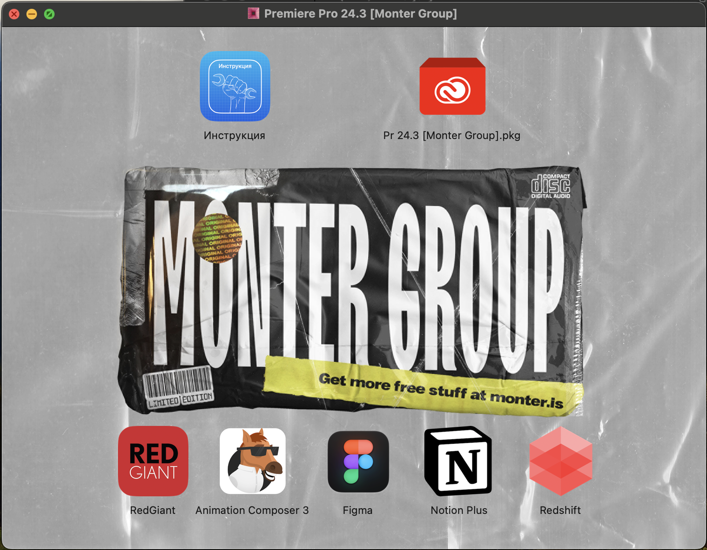
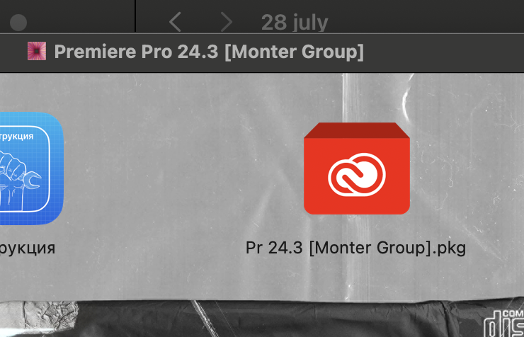
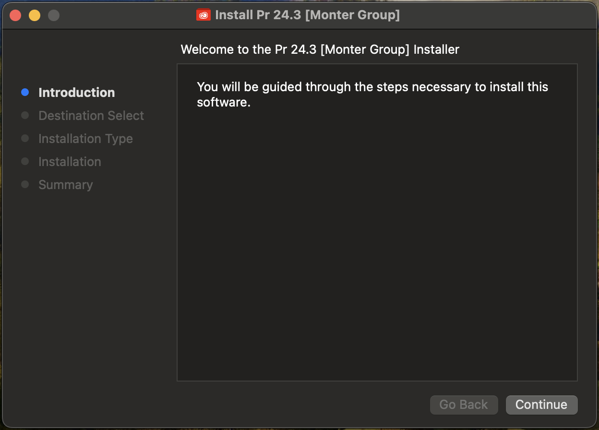
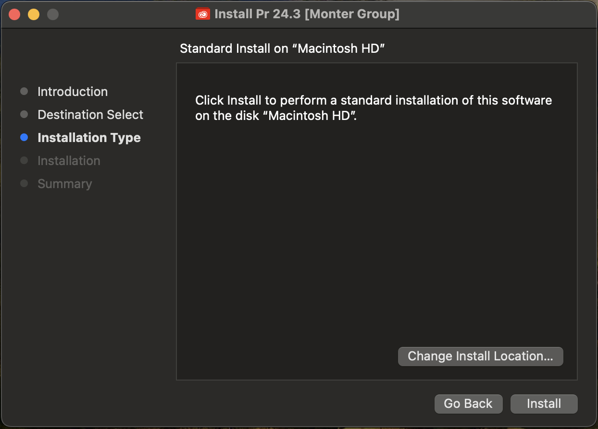
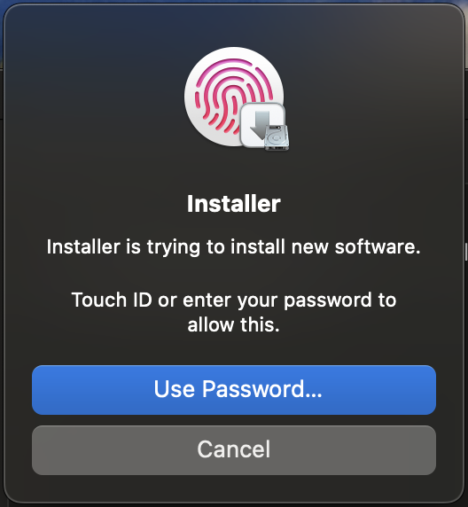
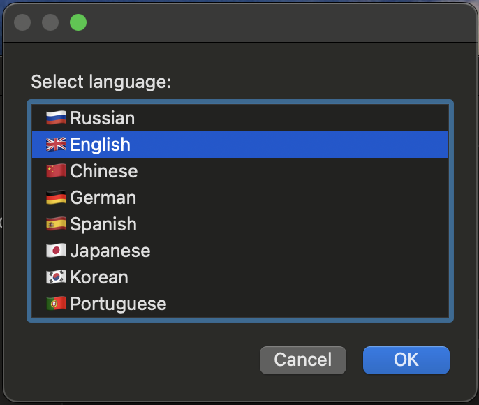
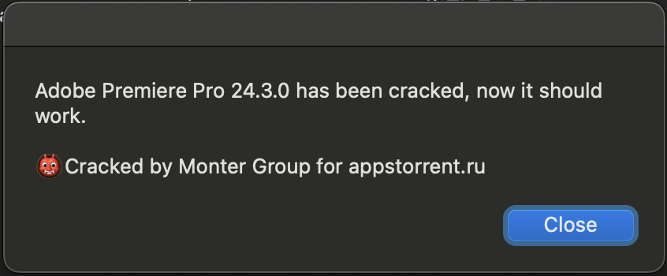
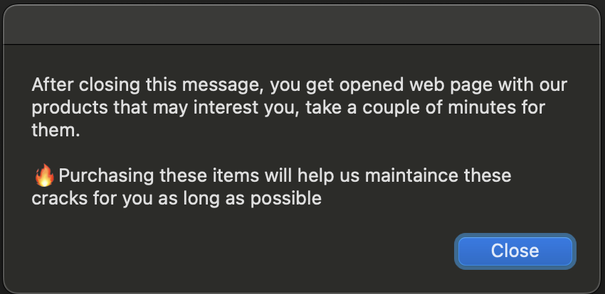

Algum Software do Adobe parou de funcionar?
Nos sistemas macOS isto é normal para quem utiliza programas
crackeados.
Infelizmente, será necessário ficar reinstalando sempre que for preciso.
Algumas vezes eles duraram mais,
e em outras menos tempo sem ser necessário reinstalar.
Não se preocupe!
O processo de instalação dos cracks da Monter Group é extremamente simples de ser realizado!
1️⃣Primeira vez instalando um crack do Monter Group em seu Mac? Clique aqui
___________________________________________________________________________
↘️ Siga o Passo-a-Passo a baixo para ter uma nova versão ↙️
Pode ser que você não precise do passo 1 ( Desinstalar ), mas mesmo assim leia-o!
⚠️ Isso pode previnir a perda de arquivos importantes seus ou
pacotes-externos instalados na versão antiga!
___________________________________________________________________________
-
Desinstale o Programa antigo
Pode ser que o programa antigo ainda esteja instalado, independente se ele não funciona mais.
Mas em alguns casos, além de parar de funcionar, o próprio sistema ja desinstala ele, pois
o Adobe indica ao macOS que este software apresenta risco ao sistema (por ser crackeado)!-
Acesse o local "Applications" do Finder"
No exemplo abaixo vamos desinstalar o Adobe Illustrator

Você pode encontra-lo na barra lateral a esquerda do Finder.
-
Mover o Diretório Completo do Software para a Lixeria
Observe que é o Diretório, a pasta do software que será apagado.
🛑ATENÇÃO:
Dentro do diretório do software, encontramos diversas pastas e arquivos nativos ou que você
utilizou e instalou anteriormente...
...como diferentes Fontes e Texturas baixadas externamente e que depois foram atribuídas ao
programa por meio alguma destas pastas.
⚠️ então lembre-se de salva-las para adiciona-las a nova versão que instalaremos, para evitar que
você perca qualquer recurso externo instalado antes.
-
Autorizar com Senha ou Digital a Exclusão
Para excluir o Diretório completo, isto é, para apagar o App, é necessário dar a autorização ao
sistema.
-
Remova o Atalho do Programa do Desktop
Para finalizar então, tudo que falta é remover o atalho deste programa da área de trabalho caso você o
tivesse colocado la.
Ele não some automaticamente após a exclusão do software, você precisa ir la resolver.

______________________________________________
______________________________________________
______________________________________________
______________________________________________
-
-
Obter a Lista de Downloads
Acesse o seguinte grupo do Telegram e deixe-o salvo, assim você sempre terá acesso
às novas versões:
 Monter Group Channel
Monter Group Channel
Será necessário criar uma conta no Telegram caso você ainda não tenha. Basta ter um número de celular para isso!
Neste canal, os desenvolvedores ficaram atualizando a última mensagem com todos os links das novas versões!
Atente-se ao versionamento disponível de programas por lá, e se correspondem aos seus atuais ou não.
Eles atualizam links mensalmente e até semalmente.
Se o seu programa esta dando problema e o versionamento no chat ainda é o mesmo, é sinal de que um novo ainda não foi publicado ali!Exemplo de como a lista fica no canal do Telegram deles:

Observe que la em cima, do lado direito desta mensagem, à uma indicação de que ela foi
editada, exatamente conforme eu expliquei acima sobre as atualizações constantes de mensagens deste canal.Sempre que precisar, neste canal, busque pelos programas que você deseja instalar, aqui estes
desenvolvedores (Monter Group) passam apenas alguns de seus softwares, se você deseja algum outro,
talvez seja recomendado buscar la no AppsTorrent EUA ou Russo assim como faremos com o Acrobat e Office.___________________________________________________________________________
Versionamento e Compactação
Até agora eu venho mantendo o Histórico de versões baixadas e a Biblioteca das ja utilizadas anteriormente
neste local:Desktop / JP_Installations / arqvsInstaladores / Softwares_Adobe_MonterGroup / 28 july / ...
Pode mudar o local! Mas anote o novo endereço pois eu vou te perguntar isso da próxima vez que for
preciso arrumar outra coisa!Então... todas as vezes que eu baixei uma nova versão, além de executá-la para a instalação, eu também a
compactei para comparar com versões futuras.
Se possível (se sobrar armazenamento), mantenha essa estratégia de compactar novas versões futuras e
as guardar. Isso ajudará meu conhecimento (Eu JP) e aprendizado sobre versionamento dos cracks, e
meu conhecimento de cracks para com o macOS.
Mas lembre-se de compactar o arquivo ".dmg" baixado (com o botão direito do mouse). Isso protegerá o arquivo de
quaisquer corrompimentos indesejados. -
Instalação da Nova Versão
Neste exemplo instalaremos o Adobe Premiere
-
Execute o ".dmg"
Dois cliques para executar.
Ao executar o arquivo, você terá acesso a um menu como o da foto abaixo:
 -
Execute o ".pkg" do Software Adobe
Dois cliques para executar.
Ele sempre estará nesse mesmo lugar a direita e em cima.
O azul da esquerda é um READ-ME, um manual de instruções dos próprios Desenvolvedores da Monter.
La é possível achar um forma de instalar diferente para ter acesso as ferramentas generativas dos
Softwarres Adobe originais. Se funciona eu não sei mas a chance é mais do que instalar dessa
forma padrão que estou passandoa aqui, basta traduzir para português para entender. -
Clique em "Continue" na Janela de Instalação
Aqui abre-se o balão de instalação do Software desejado
Como em qualquer instalação e em qualquer OS, basta ir prosseguindo
com a intalação de agora em diante. -
Defina o Disco e Clique em "Install"
Aqui você pode escolher instalar arquivos diretamente no Disco Local de seu Mac, ou até mesmo

instalar o software em um HD externo. Sim isso é possível!
Mas, para isso eu recomendo que você converse melhor com alguma IA para ela lhe explicar melhor todos os
detalhes de execução, instalação e recomendações. -
Autorizar a Instalação
É necessário autoorizar a instalação na máquina com sua senha ou impressão digital, principalmente por

que ela é de uma fonte que não é nativa e nem conhecida pelo sistema. -
Atenção a Esta Etapa
Aqui a barra de carregamento passará por várias etapas, inclusive uma em que
aparece escrito "Wrinting files..." e outra "Running Package Scripts...",
como na imagem abaixoSe há alguma coisa para acontecer de errado, na maioria das vezes é aqui que ela acontece.
Apareceria então alguma mensagem de erro neste momento e,
infelizmente, teríamos de esperar uma NOVA VERSÃO la no grupo do Telegram.
Mas se tudo der certo, o que é a tendência, vamos ao próximo passo...
-
Defina uma Linguagem para o Software
Acredito eu que esta linguagem não poderá ser alterada mais tarde! Apenas com uma reinstalação.
Após o "Ok" a instalação se encaminhará para o final...
-
Confirmação da Instalação e Ofertas
Aqui se abriram 2 janelas após a instalação...
A primeira indica que a instalação do crack foi concluída com sucesso e que ja pode rodar!
A segunda, abre o site do "AppsTorrent Russo" para mostrar outros Softwares Crackeados do

Monter Group (Pagos).
Contribuir com novos softwares é de grande ajuda para a equipe mander
sempre novas atualizações funcionais
_________________________________________________
_________________________________________________
_________________________________________________
_________________________________________________
_________________________________________________
_________________________________________________
_________________________________________________
_________________________________________________
_________________________________________________
A FINALIZAR NESTA PÁGINA:
4. Após instalar mostrar o Diretório Criado.
4.1 - Falar que é possivel instalar Fontes e Texturas manualmente nos programas por meio destas pastas
8. Lembrar de Arrastar um Atalho para o Desktop ---- TALVEZ ESTE SEJA MAIS PARA CIMA
5. Mostrar na Área de trabalho que devemos "Ejetar" a imagem do "Disco" ("Armazenamento Fictício")
5.1 - Para enfim fechar aquela telinha
9. Falar sobre tentar instalar qualquer um dos No_Acount_Patcher, que vieram junto com o "Adobe Acrobat" (imagem abaixo)
9.1 - Falar sobre tentar buscar por novas versões deste "Mini-Software" (complemento) e que isso pode
previnir possiveis erros futuros.
9.2 - Se for buscar, tentar achar da própria Monter Group ...
100. Criar uma página somente para o MANUAL de INSTRUÇÕES do "Monter Group"
101. Criar pagina para falar da insalação de softwares em HDs Externos

Eu deveria colocar o texto mostrado no primeira pagina do instalador do No_User_Patcher
Voltar ao Início⬆️
Instalar o "Clipy" neste computador para facilitar e melhorar o historico de "ctrl C + ctrl V"
Mais sobre ele em meus ultimos chats do Chat GPT -